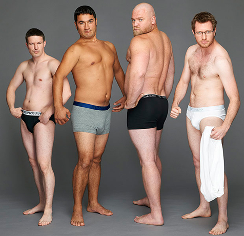

Relacionamentos
Uma maneira comprovada de segurar a 'cauda' como uma arma 'ou como recuperar uma ereção com qualquer idade'
Olá, rapazes.
Bem, quem queria ouvir algo picante? Prepare um caderno com uma caneta para escrever uma receita de uma ereção de pedra, e um lenço se você for subitamente tocado pela história de um macho alfa de 35 anos cujo tronco de destruição em massa de repente começou a funcionar mal
Brincadeirinha, você não precisará de um caderno com uma caneta.

Até os meus 35 anos, eu não conseguia nem imaginar que palavra 'problema 'e' sexo' poderia compor uma única frase. Mas a vida tem um senso de humor muito específico. E se antes eu ria dos amantes fracassados, agora o próprio destino estava rindo de mim com a risada mais diabólica possível.
Primeira falha
Na sexta-feira depois do trabalho,eu e meu colega decidimos nos encontrar para assistir futebol. Eu não era fã do que estava acontecendo, mas não me importava em apoiar o espírito patriótico, mas também não iria recusar tomar algumas assistindo o jogo.
A festa acabou ficando completamente sem graça. Para salvá-la de alguma maneira, sugeri ligar para as meninas e ir para a sauna.
O espírito não entusiasmado de excitação me levou a pegar a moça mais difícil, que estava se recusando por um longo tempo, mas, pela vontade do destino, concordou com tudo esta noite.
As meninas, incluindo a minha Lisa, tomaram algumas rapidinho- não havia necessidade de agarrar ninguém. Passamos gradualmente para a posição horizontal. Uma brincadeira preliminar de tirar o fôlego, um boquete fabuloso ... tudo correu certinho até Elisa ordenar: “Fode -me até que enfim!
Eu compartilhava completamente o desejo dela, mas meu pau decidiu dar marcha ré.'Já, já', eu falava, como um jovem com espinhas que goza só de ver uma moça bonita.
Vendo minhas tentativas malsucedidas de colocar uma cobra meio morta na Elisa, a dama do meu coração perguntou com a voz de Hitler que tipo de lixo era aquilo, se vestiu e evaporou, sem me dando a chance de tentar enganá-la

Eu me senti em um buraco de merda. Não foi apenas uma vergonha, não foi apenas um fracasso, foi uma merda verdadeira. Isso nunca aconteceu comigo, NUNCA.
Seria possível encontrar uma desculpa se essa merda não acontecesse novamente em algumas semanas. E em um mês novamente e novamente. Foi um fim
Nervos? Eu não estava nervoso. Álcool? Eu nem estava bêbado. Idade? Tenho 35 anos! Procurando uma resposta que pudesse explicar de alguma forma o que aconteceu, eu entrei na internet. E honestamente, fiquei de boca aberta.

Os artigos científicos populares, tais como revelações experimentadas em tais situações, falaram por unanimidade que uma ereção é algo imprevisível: hoje ele está duro e amanhã já está no clube dos impotentes anônimos
É claro que uma vez ele pode não se levantar por qualquer motivo, mas se isso aconteceu pelo menos uma vez, aguarde a continuação ou tome medidas urgentes.
Aliás, o Viagra não tem relação com essas medidas urgentes. Esse lixo sintético não apenas te faz viciado com uma pílula, mas também abre um caminho curvado para a impotência e depois para o ataque cardíaco.
Por que o pênis não se levantou
Os motivos, como se viu, podem ser vários. A disfunção erétil (também conhecida como impotência) se desenvolve gradualmente no contexto de:
- consumo frequente de álcool
- desnutrição
- ejaculação rara (menos de uma vez a cada 3 dias)
- obesidade (barriga de cerveja)
- testosterona baixa.
Aos 30 anos, na Rússia, um homem comum tem o nível da testosterona muito menor do que o normal. Isso afeta a resistência no sexo, a duração do sexo e sua qualidade.
E se inconscientemente tomar Viagra e os remédios sintéticos semelhantes, pelo menos ocasionalmente, aos 40 anos de idade, um pau se tornará um pedaço de pele praticamente inútil.
A propósito, a testosterona é responsável não apenas pelo sexo e ereção forte, mas também pela aparência masculina. Homens que parecem panquecas mal assadas com um peito tamanho GGG e carecas na cabeça - em 80% dos casos, esse visual é consequência da falta de testosterona.

Em algum lugar de buscador, foi encontrado um fórum em que homens de todas as faixas etárias compartilhavam suas experiências experimentais.
Tirando toda a bobagem, muitos discutiram o remédio parecido com o Viagra, mas, diferentemente do último, esse era natural, seguro e até útil para todo o organismo - .
Os especialistas garantiram que o remédio foi testado e realmente funcionava. Você toma duas cápsulas, e após 15 minutos obtém o efeito desejado. Mas é melhor fazer o tratamento completo de um comprimido por dia de 4 a 6 semanas para aumentar o tônus de todo o corpo e por vários anos, não se preocupar com a força da ereção.
Decidi abordar o problema com toda a responsabilidade e comprei 5 pacotes imediatamente para tomar.
Na segunda semana, a ereção matinal, que não havia sido observada antes da ressaca, foi um motivo de alegria. Eu tinha tanta energia que podia foder uma cidade inteira, e eu nem aguentava mais.
Vitória completa
Em busca de uma garota para passar a noite, fui ao pub, mas em vez de encontrar uma moça estranha e sensual, me deparei com aquela Elisa. Aquela filha da mãe que começou tudo.
Ela fingiu que nada aconteceu, e eu esperei que ela falasse sobre aquela noite, estava muito nervoso e tomei 10 copos de cerveja. Muito ousado, convidei a Elisa para continuar a noite na minha casa.
Eu não sei quais planos ela tinha, mas ela topou. A história se repetiu igual até o momento em que eu tive que transar com ela.
Desta vez, o pau não caiu, ele se tornou uma vara mesmo, apesar de eu estar bastante bêbado e ter medo de derrota, que desapareceu após o primeiro orgasmo de Elisa.
Não tive uma maratona sexual tão tempestuosa, molhada e longa há muito tempo. Tudo, como foi prometido pelos caras do fórum: controle da ejaculação, ejaculação longa, resistência de boi - a testosterona estava saindo de todos os buracos
Foi uma vitória completa e, é claro, nem a única. Já se passaram mais de seis meses desde que fiz o tratamento com o . Durante esse período, não houve uma única falha, seja qual for o meu estado.
Onde obter
Agora, a coisa mais interessante. Há rumores de que a demanda por esse remédio está crescendo à velocidade da luz. Há duas notícias a esse respeito. Uma ruim que o preço aumentará acentuadamente em alguns meses. Uma boa - até 30.12.2019 no site do fabricante do , você pode comprar o remédio para o tratamento completo pelo preço de uma caixinha. Eu recomendo estocá-lo para que você não precise morder os cotovelos.
já ouvi falar muitas vezes deste remédio. Estou com medo de tomá-lo, pois vai que o pau caia
Estamos no século 21, cara! É um troço natural e já foi testado milhares de vezes! Mas eu estou nem aí, pois estou tomando este remédio e funciona por 200%
porra, estou procurando por este há mais de um ano!!! Eu já tomei uma vez – é um item indispensável, contém muitos vitaminas . Ele me faz tão bem, e a minha ereção é igual a que eu tive aos 15 anos de idade! Obrigada pelo artigo!
Comprei esses dias uma caixinha de para o meu tônus geral, vamos ver o que acontece.
é um ótimo remédio))) minha esposa está adorando! Eu também posso gozar 3 vezes em uma noite só.
é um ótimo artigo! Eu sei que vocês não vão aconselhar uma merda, eu compro 5 caixas de uma vez. Sai muito barato pelo preço dessa oferta
é uma maravilha, eu faço sexo por 2 horas e durmo como uma pedra depois
antigamente este troço só podia comprar nos sites americanos, e agora nossos rapazes ficaram interessados. Claro que vale a pena